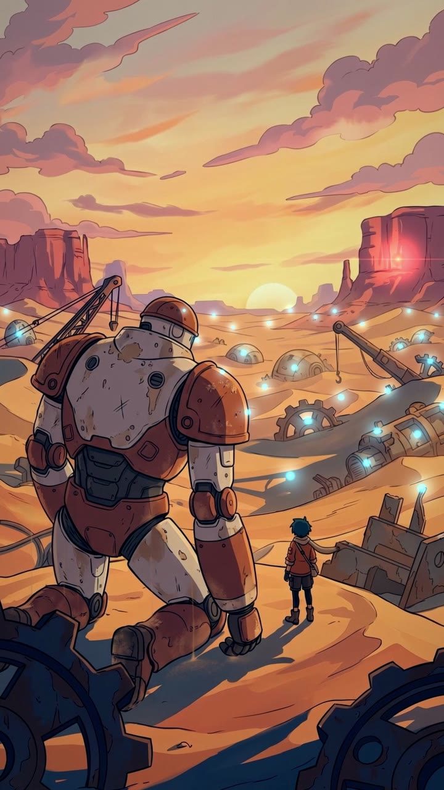
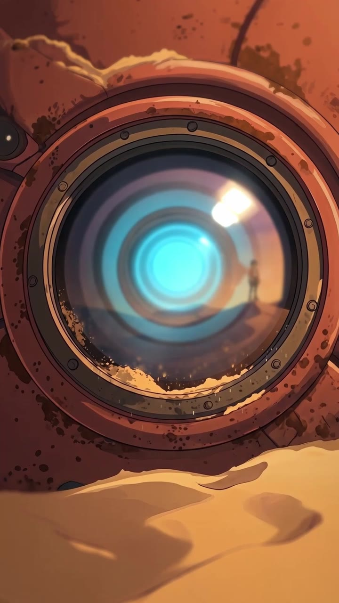
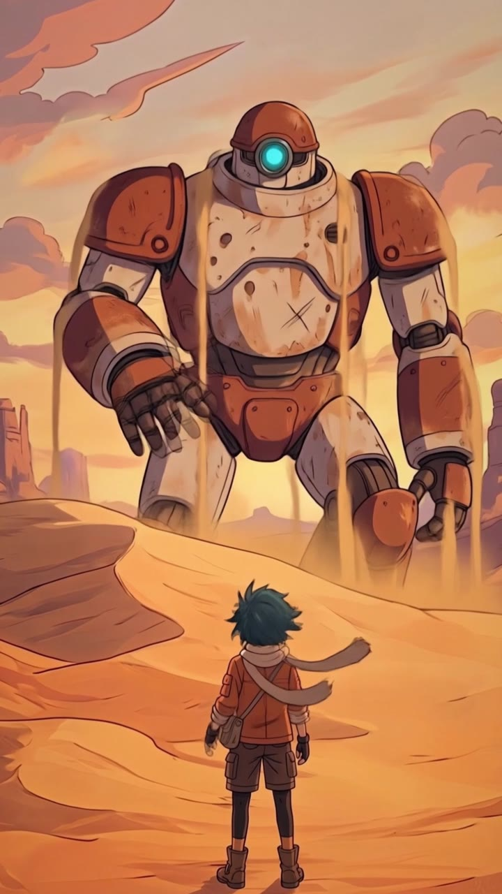
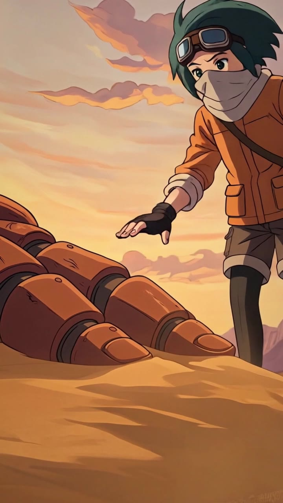
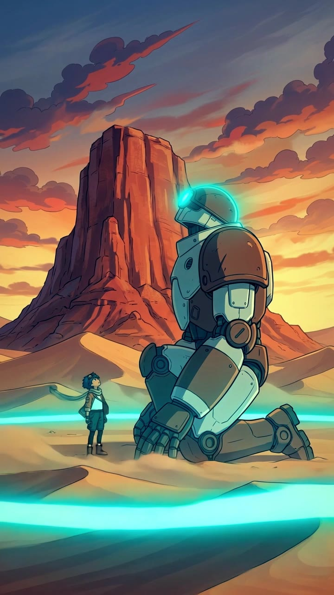
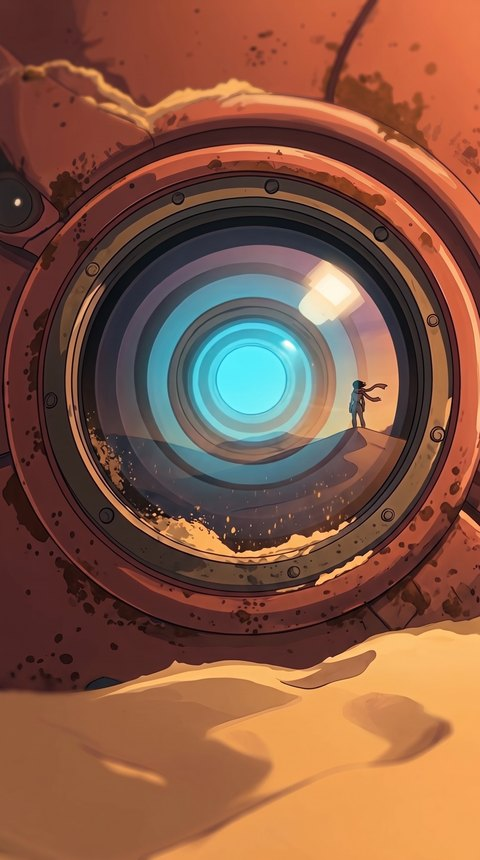
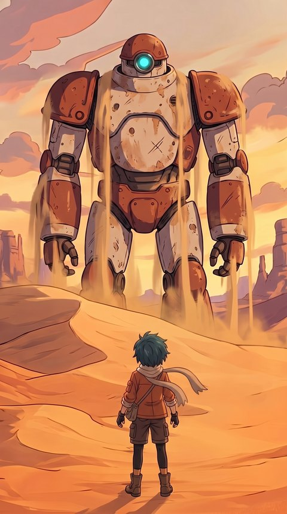
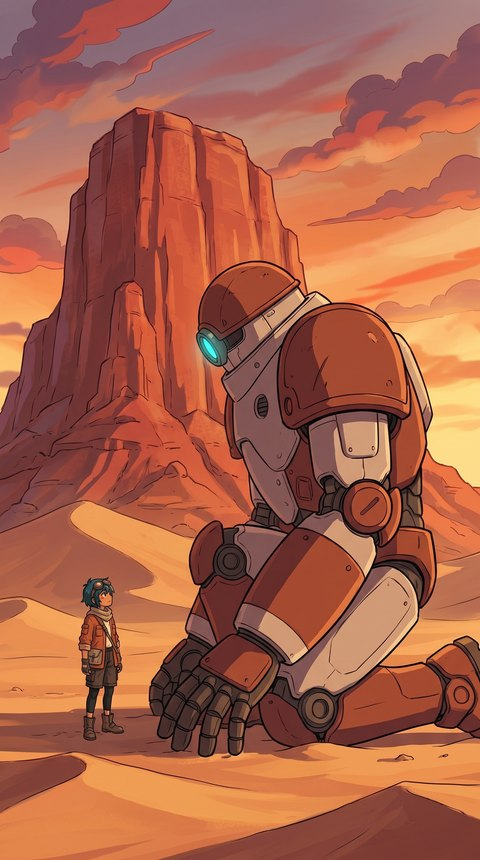
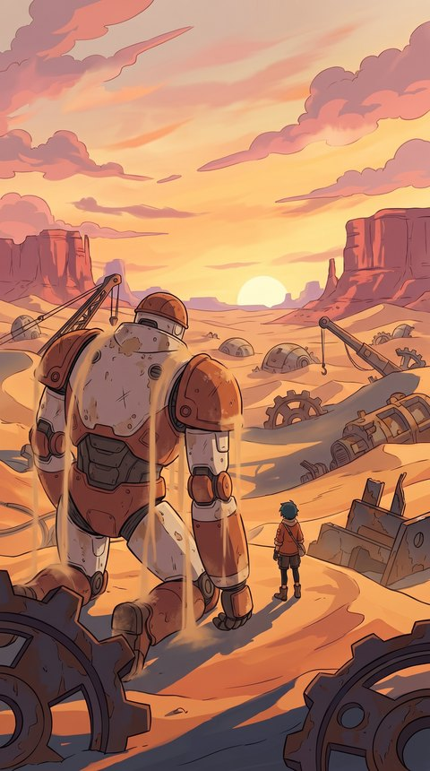

Rust Titan
Part 2
It Wasn't Alone.
The giant kneels and offers Sola its hand. When she touches it, cyan light runs up its fingers, and it sends a signal rolling across the desert. Under the dunes, dozens of eyes open to answer. Then one more opens on the far mesa, and it isn't cyan.
- Written & directed
- Rishi Patlolla
- Format
- Vertical short film · 1080×1920 · 24 fps
- Continues
- Rust Titan, Part 1, from its final frame
- Design & keyframes
- Nano Banana Pro, from Part 1's locked character and world bible
- Motion
- Runway multi-shot and Kling 4 via the Runway API
- Review
- An AI QC agent scores every keyframe and clip; a human approves each one
- Orchestration
- Claude and GitHub Actions
- Compositing & finishing
- FFmpeg assembly, DaVinci Resolve compositing and finishing
- Music & sound
- Sound designed, scored and mixed by hand
One touch, one answer





Picking up on the exact frame
Part 2 reuses Part 1's locked designs for Sola, the Titan and the desert, and its first shots are generated against Part 1's final frames, so the two films cut together as one story.
Approved keyframes




What the machine gave us,
and what we kept.
- Opened on Part 1's last framePart 1 ends on a cyan dot. Part 2 starts with that dot in the same place on screen and grows it into the Titan's eye, so the films join without a seam.
- Replaced an off-model shotIn the block's last shot Sola drifted off-model and the Titan changed shape. It was regenerated as its own shot, with both of them looking up, after one keyframe redo.
- Composited the army by handAbout thirty cyan eyes and the one red eye were placed and tracked onto the empty plate in DaVinci. No model was asked to invent them, so none of them flicker or wander.
- Kept one flaw, on purposeFor a moment during the flare the Titan's dome turns glassy. Our QC agent flagged it; we watched it at full speed, judged it read as light, and kept it rather than pay for another generation.
- Rebuilt the soundThe generated audio carried static and a whistling moan. It was denoised and cut away, and the touch now sounds like the Titan's own hum rising up its arm.
- Mixed for phonesThe first export came out at −23 LUFS, far too quiet for Shorts. It was raised to −14 LUFS with a limiter and checked again on the uploaded file.
How Part 2 was made
Story & shot list
A direct continuation in five beats: gaze, kneel, answer, signal, reply. Written as a shot script the pipeline checks before anything is spent.
Rishi · ClaudeKeyframes
Generated against Part 1's locked designs and final frames, reviewed by the QC agent, approved one by one.
Nano Banana ProMotion
One multi-shot block for the middle of the film, single Kling 4 shots for the eye and the reply, and one shot redone.
Runway API · GitHub ActionsComposite & finish
The eyes composited, sound rebuilt, music scored, the end card made, loudness checked.
FFmpeg · DaVinci Resolve